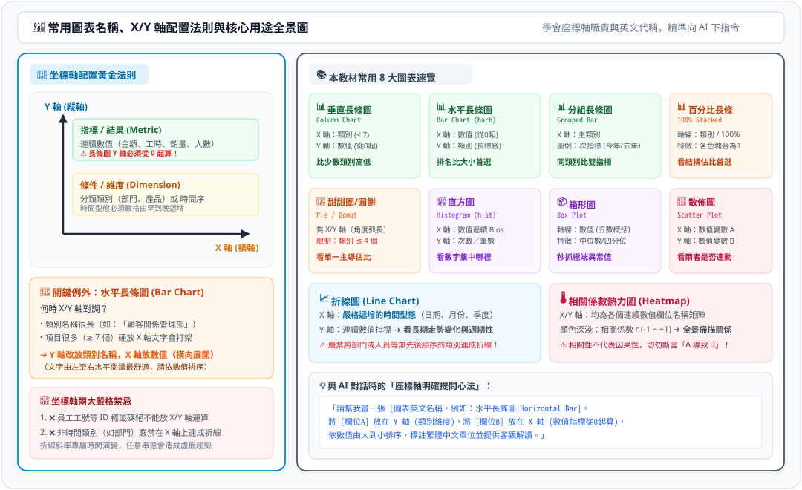

掌握長條圖、直方圖、散佈圖的中英文名稱與 X/Y 軸職責分配，避開坐標軸放置地雷，精準指揮 AI 產出商業圖表！
比較少數類別的業績、花費或數量高低差距。類別少時直立挺拔，一目瞭然。
plt.bar(df['部門'], df['金額'])
職場排名最強圖表！ 項目多（≥ 7 個）或名稱很長時，依數值由大到小排序展開。
plt.barh(df['項目'], df['數值'])
在同一類別內同時比對「目標 vs 實際」或「今年 vs 去年」的雙指標落差。
sns.barplot(x='部門', y='金額', hue='年度')
看內部結構占比的首選！ 比圓餅圖更容易讓眼睛精確比較比例差距。
df_pct.plot(kind='bar', stacked=True)
僅適用於類別極少且想強調某一個「過半壓倒性主導份額」的情境。
plt.pie(df['金額'], labels=df['類別'])
看成百上千筆數字大多落在哪個區間。柱子與柱子緊密相連，代表連續數值。
plt.hist(df['薪資'], bins=10)
秒抓離群極端值！ 檢視平均數是否被極端值欺騙的最佳利器。
sns.boxplot(x='部門', y='通勤時間')
檢驗兩指標是否同步升降（正負相關）。切勿用線條將點連起來！
plt.scatter(df['預估'], df['實際'])
多個數值欄位兩兩關係的全景掃描工具。提醒：相關不代表因果！
sns.heatmap(df.corr(), annot=True)
連續時間點（> 5 個）看成長、衰退與週期性。非時間類別嚴禁連線。
plt.plot(df['日期'], df['營收'])
下圖將 X 軸（條件/維度）與 Y 軸（指標/數值）的標準配置、水平長條圖對調例外與禁忌一次整合說明：
